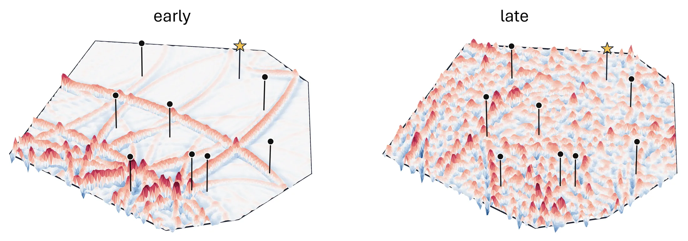
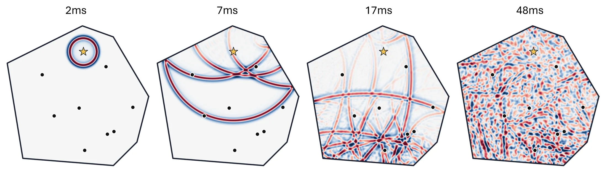
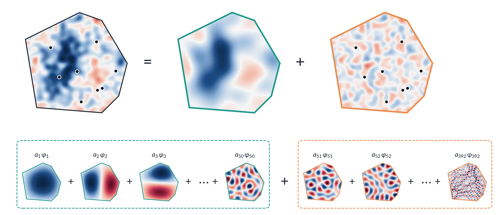
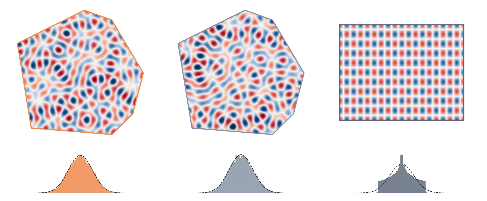
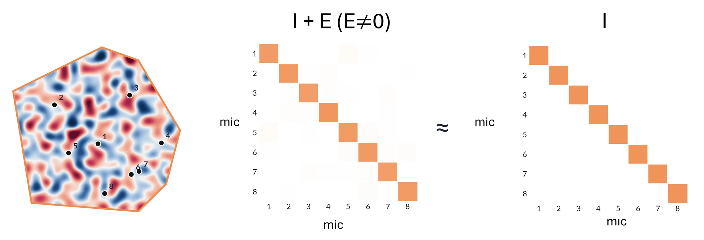
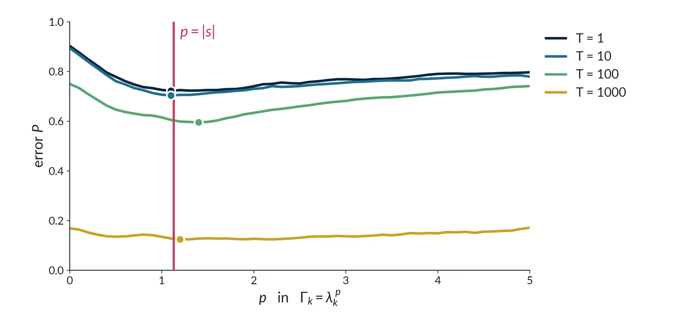
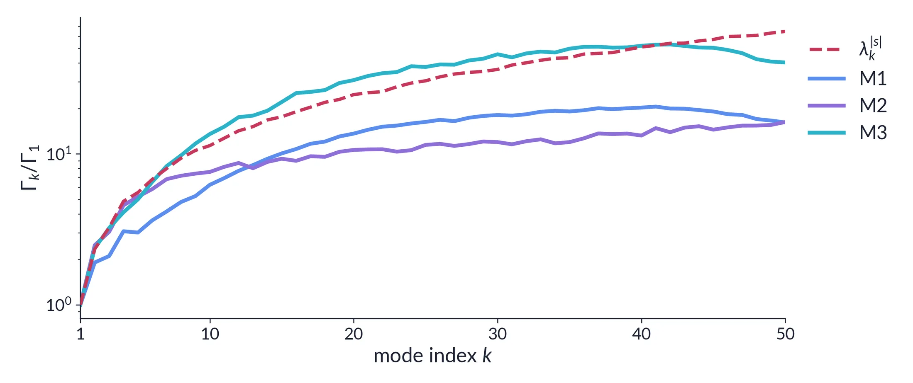

Recovering modal amplitudes from a few sensors requires regularization, and the shape of the penalty decides how strongly each mode is shrunk. The best shape depends on the truncation noise that discarded modes add to every measurement, which is unobserved and could be room-specific. We identify a diagonal saturation principle: for a single snapshot, isotropic truncation noise makes the Bayes-optimal Tikhonov shape a closed-form power law Γk ∝ λk|s|, set by the prior alone and independent of the domain. The off-diagonal anisotropy equals the Herfindahl index H of the discarded-mode power exactly, Weyl's eigenvalue counting law fixes the number of discarded modes and hence H, and Berry's random-wave conjecture enters only through a diagonal term D, which we measure directly. Together they predict an approximately flat loss landscape over the penalty exponent, which leaves a learned diagonal regularizer little to gain from tuning the exponent per room. On simulated acoustic rooms the closed form stays within 5.83% of a per-room power-law oracle across observation windows, and three learned diagonal architectures track its error, the closest within a fraction of a point and none more than 3 pp above it, while learning qualitatively different spectra. Saturation holds for every learned diagonal model tested in the truncation regime: Learned Iterative Ridge, which couples modes across layers, is the only tested method that consistently improves on the closed form. The framework extends to heat diffusion through a known Green's-function correction with no new free parameters.
We reconstruct a room's sound field from a few microphones. That needs regularization. Which penalty shape should we use — and must it be learned for every room?

We estimate the first K = 50 modes from 8 microphones, with a penalty Γk ∝ λk|s| set by the prior alone.

The discarded modes act as white noise:
One room has 392 modes below 1 kHz; we keep the first 50. Hover to magnify (on a phone, drag a finger across it).

High modes look like random waves, as Berry predicts. A rectangle's modes don't, yet its landscape is just as flat at the same mode count: the number of modes does most of the work.

The discarded modes reach every microphone as nearly equal, nearly unrelated noise, so the prior, not the room, sets the penalty shape.

The error is nearly flat in the penalty exponent p. The closed form (p = |s|, red line) sits in that flat basin, costing at most 5.83% in the median room (largest at T = 1000).

Three learned penalties (M1–M3) take very different shapes, yet reach the closed form's error: the closest within a fraction of a point, none more than 3 pp above.
@article{han2026learning,
title={Why Learning Rediscovers the Closed-Form Diagonal Regularizer},
author={Han, Jeahn and Kim, Pyojin},
journal={arXiv preprint arXiv:2609.09656},
year={2026}
}